AI 논·서술형 평가 연수 시연 사이트 · 설명서
중등 수학 논·서술형 문항을 학생처럼 풀고, AI 채점을 받고, 채점기준표를 고쳐 보고, 모둠이 함께 채점해 보는 연수용 사이트입니다. 이 설명서는 어떤 화면이 있는지, 언제 무엇을 누르면 되는지를 정리했습니다.
| 시간 | 활동 | 여는 화면 |
|---|---|---|
| 13:00 | ① AIEP 소개와 문항 의도 실제 시스템에 탑재된 모습은 진행자 계정으로 보여 주고, 반티 문항의 출제 의도와 채점기준표 구조를 설명합니다. | 학생 화면 · 교사 화면 · 출제 프로토콜 · 채점기준 비교 |
| 14:00 | ② 자료집으로 예시답안 종이 채점 학생 A·B·C 답안(문항 1·3)을 각자 채점하고 모둠에서 점수를 맞춘 뒤 입력·저장합니다. | 예시답안 교차 채점 · 현황판 |
| 15:00 | ③ 학생처럼 풀고 AI 채점 받기 직접 풀어 AI 채점을 받고, 기준표 문장을 바꾸면 점수가 어떻게 달라지는지 확인합니다. | 학생 화면 · 채점 기준 바꿔 보기 |
| 16:00 | ④ 채점 결과로 협의하기 모둠 판단이 갈린 요소, AI와 다른 요소, 학생 C의 쟁점 세 가지를 중심으로 채점기준 보완을 이야기합니다. | 현황판(해설 함께 보기) · 학생 C 쟁점 |
| 16:50 | 마무리 — 실습용 자료집은 반드시 회수(모둠별 수량 확인), 만족도 조사 안내, 멀티탭 정리 | — |
첫 화면 · 모든 연수생
학생은 문제를 풀고, 교사는 문항과 채점기준표를 고칩니다. 아래쪽 링크로 연수 안내, 출제 프로토콜, 비교 실습, K-DOT, 그리고 새로 추가된 오늘의 연수·교차 채점·현황판으로 갈 수 있습니다.
왼쪽 아래 연수 가이드는 화면 둘러보기와 미션 8개를, 가−/가+는 글자 크기를 바꿉니다.
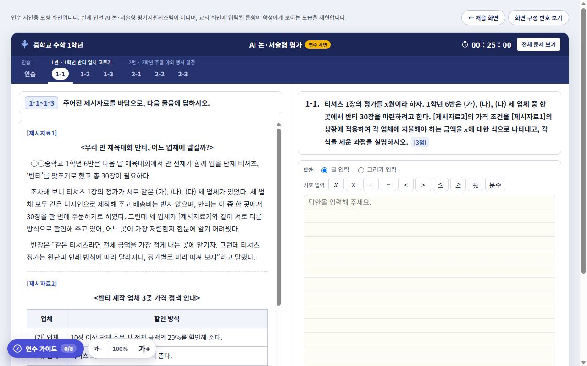
학생 응시 화면 · 연수생
문항 2세트(1번 중1 반티 업체, 2번 중2 주말 야외 행사)가 들어 있습니다. 답안은 글 입력(수식 기호 버튼, 분수 입력 포함) 또는 그리기 입력(펜·지우개·되돌리기)으로 씁니다.
밑줄·형광펜·메모장, 남은 시간 표시가 있고, 이 문항 AI 채점은 지금 문항만, 마지막 문제의 제출은 전체를 채점합니다. 답안은 이 기기의 브라우저에 저장됩니다.
…/#student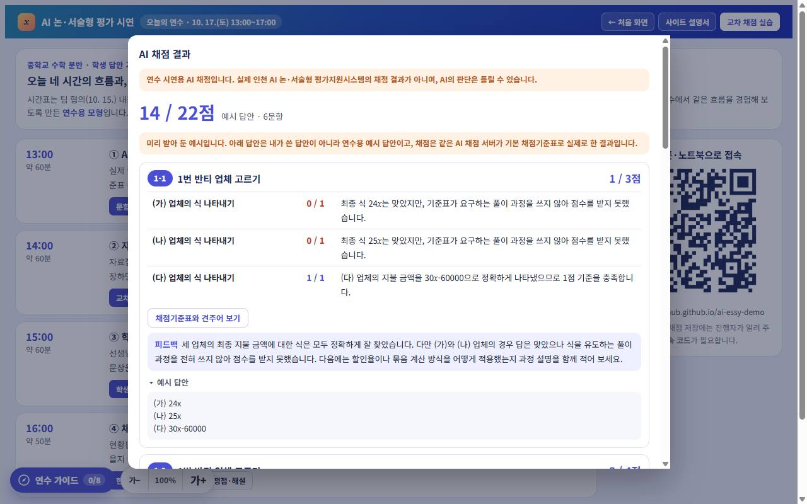
AI 채점 결과 · 연수생
AI는 채점할 때마다 그 문항의 채점기준표와 예시답안을 받아, 채점 요소마다 점수와 근거를 씁니다. 기준표 문장이 모호하면 근거에 “기준표가 모호함”이라고 표시합니다.
채점기준표와 견주어 보기로 기준표를 옆에 띄우고, 같은 답안 다시 채점으로 결과가 흔들리는지 확인할 수 있습니다(문항당 3회). 서버가 응답하지 않을 때는 예시 채점 결과로 화면을 살펴볼 수 있습니다.
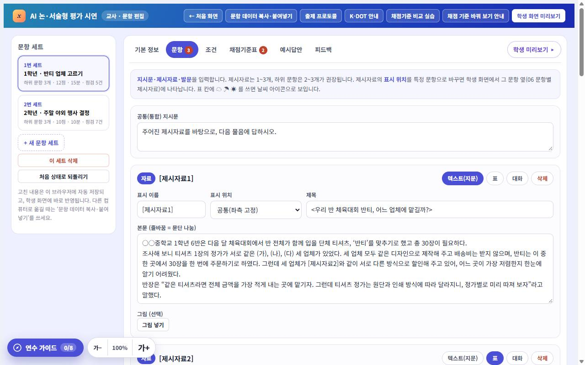
교사 편집 화면 · 연수생
왼쪽은 세트 목록, 가운데는 편집 탭(기본 정보·문항·조건·채점기준표·예시답안 등), 오른쪽은 자동 점검입니다. 새 세트를 만들거나 기본 문항으로 되돌릴 수 있습니다.
위쪽 버튼으로 출제 프로토콜, K-DOT 안내, 채점기준 비교 실습으로 바로 갈 수 있습니다.
…/#teacher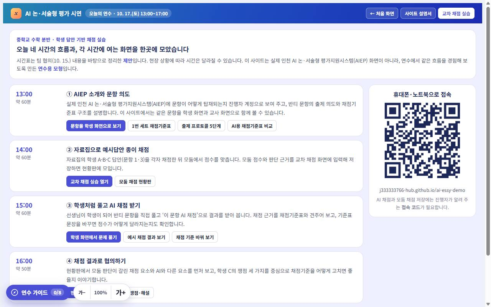
오늘의 연수 · 진행자 새로 추가
시간대마다 할 일과 열 화면 버튼을 모았습니다. 오른쪽 QR을 프로젝터에 띄우면 연수생이 휴대폰·노트북으로 바로 들어옵니다.
…/#today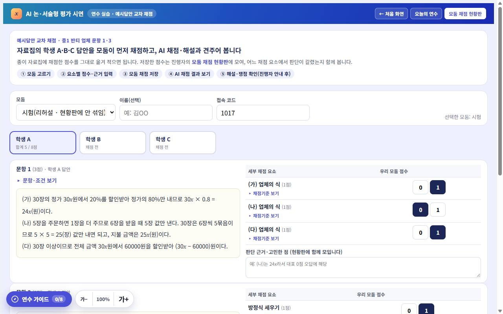
예시답안 교차 채점 · 모둠 새로 추가
종이 자료집과 같은 답안(중1 반티 문항 1·3)이 나옵니다. 모둠을 고르고, 채점 요소마다 점수 버튼을 누르고, 판단 근거를 한 줄 적은 뒤 모둠 채점 저장을 누릅니다. 학생 C는 판단이 갈리는 쟁점 세 가지에 모둠 판단도 고릅니다.
‘채점기준 보기’를 누르면 그 요소의 점수별 기준 문장이 펼쳐집니다. 리허설은 모둠을 시험으로 고르면 현황판에 섞이지 않습니다.
…/#cross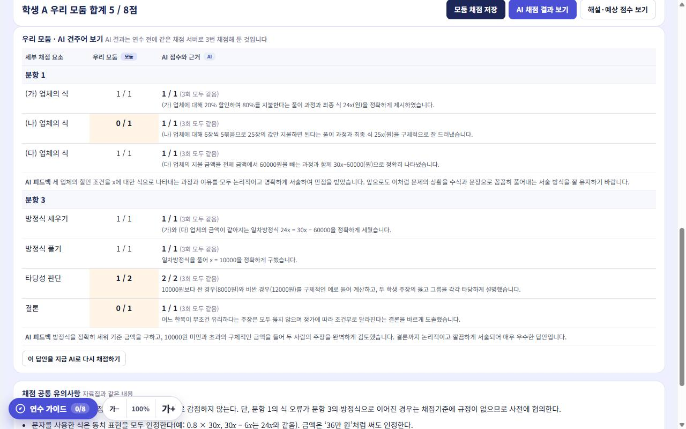
견주어 보기 · 모둠
AI 채점 결과 보기를 누르면 연수 전에 같은 채점 서버로 3번 채점해 둔 결과가 나옵니다(세 번 모두 같았는지 함께 표시). 모둠 점수와 다른 칸은 주황색입니다. 지금 AI로 다시 채점하기로 현장에서 새로 받아 볼 수도 있습니다.
해설·예상 점수 보기는 출제 선생님의 예상 점수, 판단 근거, 쟁점별 ‘인정/불인정’ 논리, 채점 협의 포인트를 보여 줍니다. 모둠 채점을 마친 뒤 진행자 안내에 따라 엽니다.
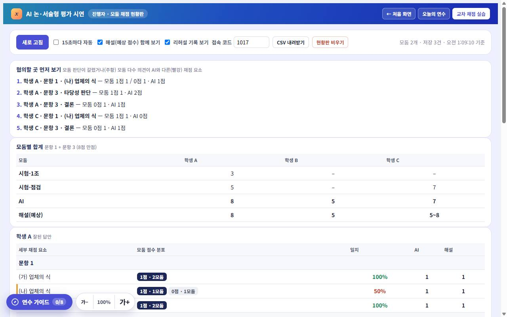
모둠 채점 현황판 · 진행자 새로 추가
채점 요소마다 모둠 점수 분포(점수에 마우스를 올리면 모둠 이름), 일치 비율, AI 점수를 보여 줍니다. 모둠 판단이 갈린 줄은 주황, 모둠 다수 의견이 AI와 다른 줄은 빨강 표시이고, 맨 위 협의할 곳 먼저 보기가 그 줄들을 모아 줍니다.
학생 C 쟁점의 인정/불인정 비율과 AI의 판단, 모둠별 합계, 모둠이 적은 판단 근거도 모입니다. CSV 내려받기로 구글 시트에 붙여 넣을 수 있습니다.
…/#board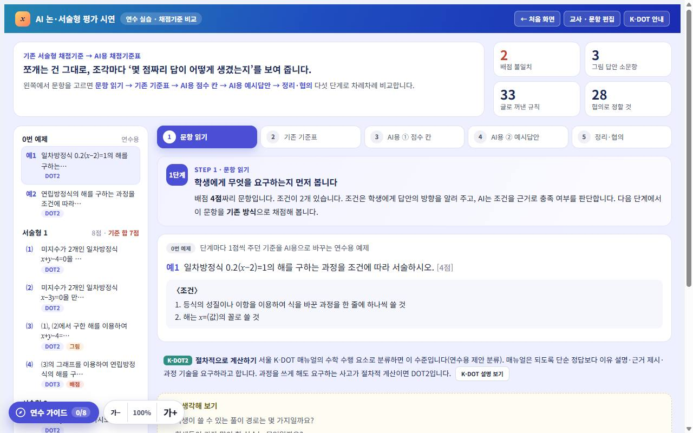
채점기준 비교 실습 · 연수생
2025년 실제 서술형 문항의 교사용 기준표를, AI가 판단할 수 있는 문장형 기준표로 바꿔 보는 5단계 실습입니다. 예제 하나를 같이 본 뒤 직접 고쳐 쓰고, 제안 답안과 비교합니다.
…/#compare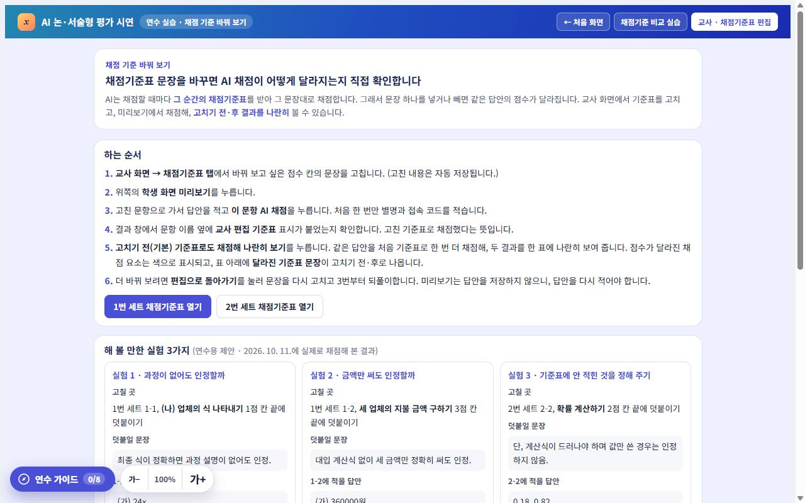
채점 기준 바꿔 보기 · 연수생
기준표 문장을 넣거나 빼면 같은 답안의 AI 점수가 어떻게 달라지는지, 미리 해 본 실험 세 가지와 직접 해 보는 순서를 안내합니다.
…/#rubtry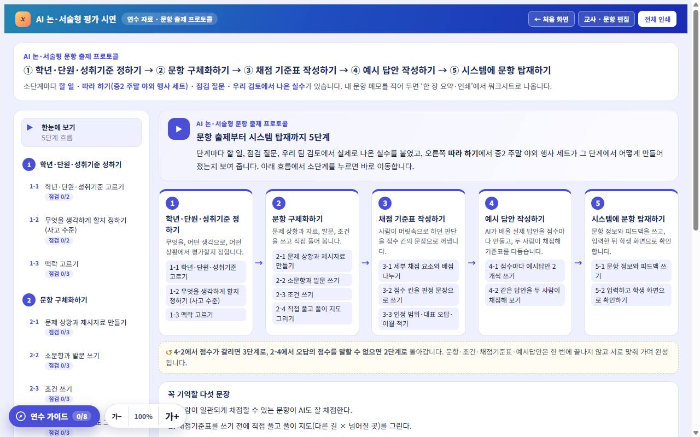
출제 프로토콜 · 연수생
① 성취기준 정하기 → ② 문항 구체화 → ③ 채점기준표 → ④ 예시답안 → ⑤ 시스템 탑재. 단계마다 점검 항목, 흔한 실수, 따라 하기 예시, 메모 칸이 있고 한 장으로 인쇄할 수 있습니다.
…/#proto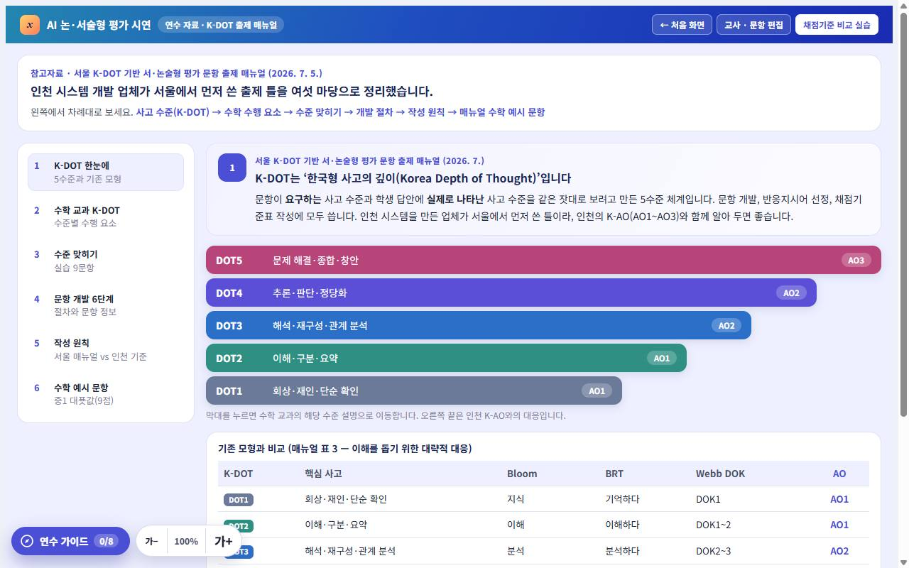
K-DOT 출제 매뉴얼 안내 · 연수생
서울 K-DOT 기반 서·논술형 출제 매뉴얼의 사고 수준(DOT1~5), 출제 절차, 퀴즈 9문항, 중1 대푯값 예시, 서울과 인천 방식의 차이를 정리했습니다. 수준 분류는 제안입니다.
…/#kdot| 붙이는 말 | 열리는 화면 |
|---|---|
#today | 오늘의 연수 |
#cross | 예시답안 교차 채점 |
#board | 모둠 채점 현황판 |
#student · #teacher | 학생 응시 · 교사 편집 |
#compare · #rubtry | 채점기준 비교 실습 · 채점 기준 바꿔 보기 |
#proto · #kdot · #guide | 출제 프로토콜 · K-DOT 안내 · 연수 가이드 |
같은 점: 문항(시스템용 2차검토본)·조건·채점기준표·예시답안 구성, 학생이 답을 쓰고 AI가 채점기준표에 따라 채점하는 흐름.
다른 점: 화면 모양과 메뉴, 계정·학급·과제 배포 기능, 채점 방식의 세부. 이 사이트의 AI는 채점 요소별로 점수를 주는 분석적 채점을 하며, 실제 시스템은 교과 공통으로 총체적 채점 방향이라고 안내받았습니다. 실제 화면 자료를 받으면 겉모양을 실제와 비슷하게 바꿀 예정입니다.
AI 채점과 모둠 채점 저장은 비용이 드는 서버를 거치므로, 연수 참여자만 쓰도록 코드로 막아 두었습니다. 코드는 진행자가 현장에서 알려 드립니다.
지금 쓰는 기기의 브라우저에만 저장됩니다. 다른 기기에서는 보이지 않고, 브라우저 기록을 지우면 사라집니다. AI 채점을 받은 답안과 결과, 모둠 채점 저장 내용은 연수 운영용 구글 시트에 기록됩니다(별명만 쓰고 실명은 적지 마세요).
조금 흔들릴 수 있습니다. 결과 창의 ‘같은 답안 다시 채점’으로 직접 확인해 보세요. 연수용 예시답안(학생 A·B·C)은 연수 전에 3번씩 채점했고, 세 번 모두 같은 점수가 나왔습니다. 점수가 흔들리는 문항은 보통 기준표 문장이 모호한 곳이라, 그 자체가 협의 거리입니다.
됩니다. 다만 화면이 좁아 제시자료와 답안이 위아래로 나뉩니다. 답안 작성과 모둠 채점 입력은 노트북·태블릿이 편합니다. 아래쪽 버튼이 떠 있는 버튼에 가리면 화면을 끝까지 내려 보세요.
아닙니다. 채점 연수를 위해 출제 선생님이 만든 가상 답안입니다(잘된 답안 · 중간 수준 · 채점 판단이 까다로운 답안).